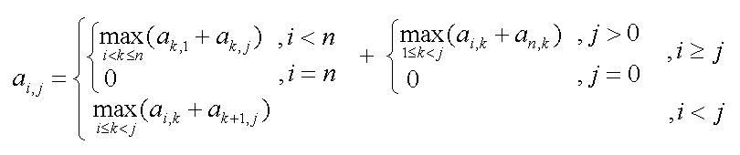

|
Determine it |
ai,j is defined as:

You are to calculate the value of a1,n on the basis of the values of n and an,1.
The input consists of several test cases. Each Test case consists of two integers n ( 0 < n < 20 ) and an,1 ( 0 < an,1 < 500 ).
For each test case your correct program should print the value of a1,n in a separate line.
5 10 4 1 6 13
1140 42 3770
Hasan Shihab Uddin ( BUET PESSIMISTIC )